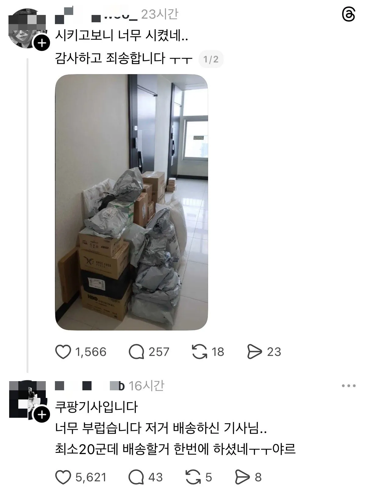

하루 로또 맞은 택배기사.jpg
댓글
나 쿠팡맨 할땐 한집에 10개여도 가구당 이었어서 1개로 쳤었던것 같은데
퀵플기사 얘기겠지
쿠친으로 바뀐 지금도
쿠친 인센티브는 1가구당 1이라
저런 집 있으면 손해임
우리는 800세대인데 중앙현관에 다 떨구고 가서 택배 기사들 개꿀일듯
알아서 찾아가는 형식이라
택배 시키면 옛날에는 3일 걸려도 막 두근두근하고 반가웠는데
요즘엔 다음날 바로오는게 너무 당연하다보니 택배가 오면 분명 내가 필요해서 시킨건데도 귀찮음...
박스 까고 테이프, 송장 뜯어서 일반쓰래기 박스는 접어서 재활용. 택배박스 까면 그 안에 또 포장지 포장지 포장지..
내가 필요해서 산거지만 이것도 일이다 싶어서 한번에 시킨건 한박스에 담아오면 좋겠는데 꼭 조각조각 따로오는게 너무 귀찮음
근데 택배기사님들 입장에선 또 좋은일이라니까 그나마 다행이군
나도 급한거아니면 현관에 밀어넣고 몇일있다가 뜯게 되드라 ㅋㅋ
오늘 1년반정도 기다려서온 피규어 배송왔는데 점심시간에 뛰어가서 까볼예정 ㄷㄱㄷㄱ
인도의 10분배송을 맛보렴 새벽배송은 넘 늦어
오피스텔이 진짜 음식배달도 그렇고 개꿀인거같긴 함 ㅋㅋ
저 개수만큼 물통이었다면?
물만 따로 배송하는 담당 기사는 있는걸로 아는데
물은 따로함
그럼 더 꿀이지 엘베있는 건물 대량주문이니
기사 싱글벙글
쌌다
궁금해서그런데 저런거 기ㅏ사한테 좋음?
배송 개수 당? 무게당? 으로뭔가 수익이정해지는건가
건당
아 그럼걍 트럭 채우고 물건 다털면 이득인거구나
기사님 기분좋은날ㅋㅋㅋ
싱글벙글
건당이면 가볍고 갯수많은걸 같은날에 같은택배사로 시키는게 제일 베스트겠네
괴상하게도... 오늘은 운수가 좋더니만...
설렁탕을 사다 놓았는데 왜 먹지를 못하니..
진심 택배기사 싱글벙글 조졌겠네 짐옮기면서 존나 웃음이 떠나질않았겠다
운수좋은날 흑흑